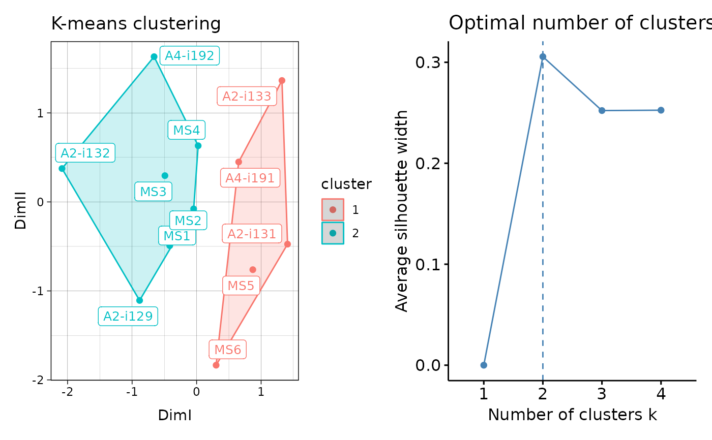

Visualisation of the results of K-means and DBSCAN clustering. For hierarhical clustering visualisations see vis.immunr_hclust.
# S3 method for immunr_kmeans vis( .data, .point = TRUE, .text = TRUE, .ellipse = TRUE, .point.size = 2, .text.size = 10, .plot = c("clust", "best"), ... )
| .data | Clustering results from repOverlapAnalysis or geneUsageAnalysis. |
|---|---|
| .point | If TRUE then plot sample points. Passed to fviz_cluster. |
| .text | If TRUE then plot text labels. Passed to fviz_cluster. |
| .ellipse | If TRUE then plot ellipses around all samples. Passed to "ellipse" from fviz_cluster. |
| .point.size | Size of points, passed to "pointsize" from fviz_cluster. |
| .text.size | Size of text labels, passed to labelsize from fviz_cluster. |
| .plot | A character vector of length one or two specifying which plots to visualise. If "clust" then plot only the clustering. If "best" then plot the number of optimal clusters. If both then plot both. |
| ... | Not used here. |
Ggplot2 objects inside the pathwork container.
